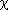

Owning Palette: Probability & Statistics VIs
Requires: Full Development System. This topic might not match its corresponding palette in LabVIEW depending on your operating system, licensed product(s), and target.
Use the Hypothesis Testing VIs to test hypotheses about a population.
The VIs on this palette can return mathematics error codes.
| Palette Object | Description |
|---|---|
| Contingency Table | Computes the Pearson 2 test for independence. This function is used to test whether the row and column categorical variables of the contingency table are independent. |
| Correlation Test | Tests hypotheses about the association between two variables x and y. |
| Rank Transformation | Finds the rank order of each element in the x input and returns the order of each element in the rank order x output. For all tied rank values, the mean rank replaces the rank returned. |
| Sign Test | Tests hypotheses about the median of continuous distributions. You must manually select the polymorphic instance to use. |
| T Test | Tests hypotheses about the mean of a population whose distribution is at least approximately normal but whose variance is unknown. |
| Wilcoxon Signed Rank Test | Tests hypotheses about the mean of populations whose distributions are continuous and symmetric but not necessarily normal. You must manually select the polymorphic instance to use. |
| Z Test | Tests hypotheses about the mean of a population whose distribution is at least approximately normal and whose variance is known. |